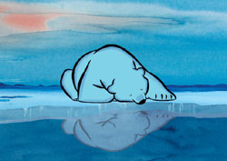
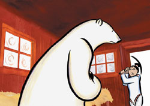
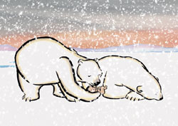

「白くまになりたかった子ども」ダイジェスト（前半）
北の果ての氷りついた海辺、雪と風のなかに悲しげななき声がひびきわたっていました。
一ぴきのシロクマが、氷のうえで涙をふりしぼるようにないています。
シロクマは何ヶ月も前から、赤んぼうが生まれるのを楽しみにしていました。
それなのに、生まれる寸前になって、オオカミにおそわれてしまったのです。
赤んぼうは、生まれたとき、息をしていませんでした。

すこし南へいったところに、木でできた小さな家がありました。
あたたかそうなへやのなかでは、イヌイットのお母さんが赤んぼうをあやしています。
「よし。おまえの名はチビクマにしよう。なにしろ、クマのうた声をききながら生まれたのだから」
イヌイットのお父さんはいいました。
遠くからながめていると、イヌイットのお父さんがそりにのってでかけていくところです。
お父さんクマは、赤んぼうのなき声にさそわれてイヌイットの家にちかづきました。
「この子がうちの子だったらいいのに……」
ふと気がつくと、お父さんクマはイヌイットの家にはいり、自分の鼻先をチビクマにちかづけていました。
お父さんクマは、赤んぼうをだいたまま、雪のなかへ走りさってしまいました。

お父さんクマは、お母さんクマのもとにもどると、赤んぼうを雪のうえにおきました。
「そりから落ちたのかなあ。空からふってきたのかもしれない……」
「にんげんの子なんていらないわ。わたしの子グマに会いたいの……」
お母さんクマは、ふりむきもしません。
「それはむりだよ。ああ、こまった。この子は死んじゃうよ。まあどうせ、にんげんの子だけど……」
 |